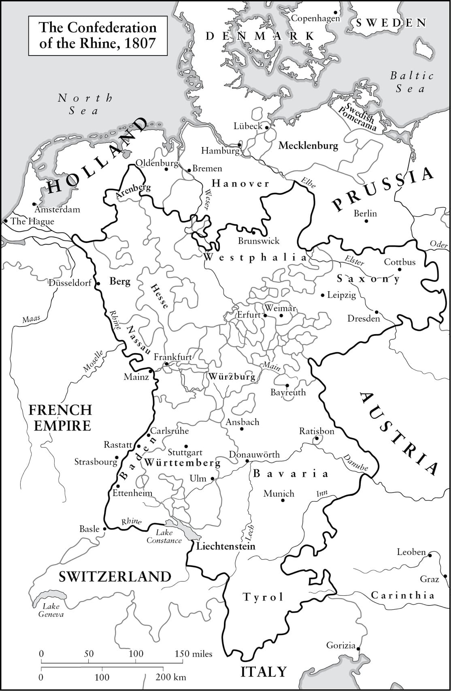
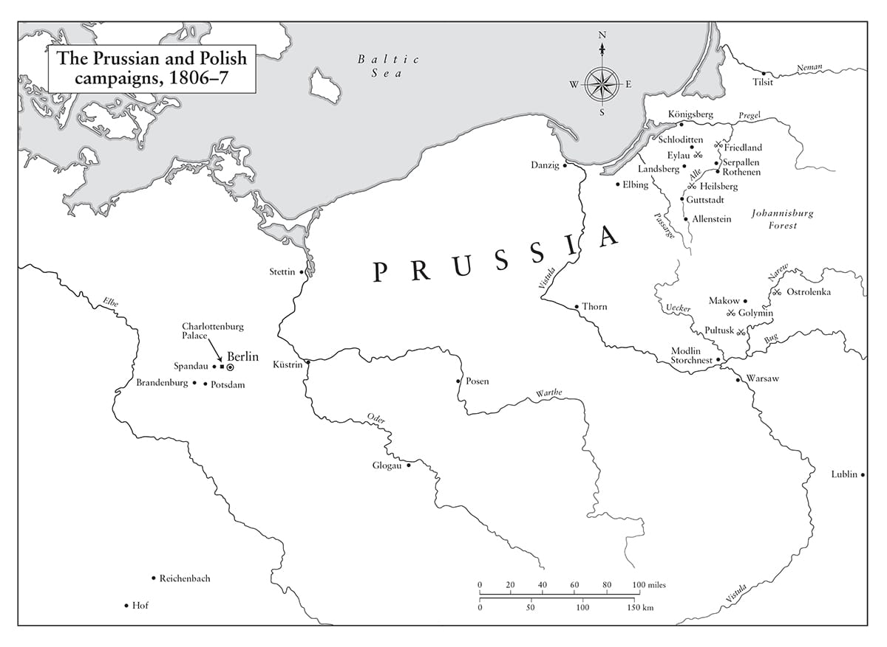
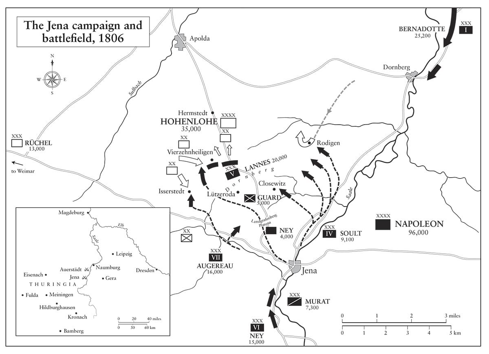

Phổ được ấp nở từ một quả đạn đại bác.
• Được cho là do Napoleon nói
Khi ta nhận được các báo cáo hằng tháng về tình trạng các đạo quân và hải quân của mình, kín cả 20 tập dày… Ta thấy thích thú hơn nhiều khi đọc chúng, còn hơn một cô tiểu thư đọc một cuốn tiểu thuyết.
• Napoleon nói với Joseph, tháng Tám năm 1806
⚝ ✽ ⚝
Vào buổi sáng sau trận Austerlitz, sau khi đã thay áo sơ mi lần đầu tiên sau tám ngày, Napoleon cưỡi ngựa đi vòng quanh bãi chiến trường. Bên bờ hồ Satschan, ông nhìn thấy một trung sĩ người Lithuania bị trúng đạn vào đùi đang nằm trên một tảng băng nổi dập dềnh. “Máu anh ta loang ra nhuộm băng thành màu đỏ tươi”, Marbot nhớ lại, “một cảnh tượng khủng khiếp”. Người lính gọi Napoleon, ông liền cho hai sĩ quan bơi ra chỗ anh ta. Sau đó, ông thưởng rượu rum cho họ, hỏi họ đã tận hưởng cuộc tắm của mình ra sao. (Viên trung sĩ sau này gia nhập lực lượng kỵ binh dùng thương của Cận vệ.)
Hôm sau, Napoleon chấp nhận đề nghị hội kiến của Hoàng đế Francis, và lúc 2 giờ chiều hai người gặp nhau lần đầu tiên bên một đống lửa dưới chân cối xay gió Spaleny Mlýn, cách Austerlitz 16 km về phía tây nam trên đường đi Hungary. Họ ôm nhau thân mật và trò chuyện trong 90 phút. “Ông ấy muốn lập lại hòa bình ngay lập tức”, Napoleon viết cho Talleyrand sau đó, “ông ấy kêu gọi những cảm xúc cao cả hơn nơi ta”. Trên đường quay về trên lưng ngựa, Napoleon nói với ban tham mưu: “Thưa quý vị, chúng ta trở về Paris; hòa bình đã được tái lập”. Sau đó ông phi nước đại trở về làng Austerlitz để thăm Rapp bị thương. “Một cảnh tượng thật lạ lùng để một triết gia chiêm nghiệm!” một trong những người có mặt nhớ lại. “Một hoàng đế của Đức tới hạ mình cầu xin hòa bình với con trai của một gia đình Corse bé nhỏ, trước đó không lâu còn là một thiếu úy pháo binh, được tài năng của bản thân, vận may cùng lòng dũng cảm của những người lính Pháp đưa lên đỉnh cao quyền lực và trở thành người phán xử vận mệnh của châu Âu”. Napoleon từ chối viết những suy nghĩ của mình về Francis ra giấy khi gửi thư cho Talleyrand – “Ta sẽ nói miệng với ông những gì ta nghĩ về ông ấy”. Nhiều năm sau, ông nói rằng Francis “mới đạo đức làm sao khi ông ấy không bao giờ làm tình với bất kỳ ai ngoài vợ mình” (mà ông ta có bốn). Ông tỏ ra ít tử tế hơn trong đánh giá của mình về Sa hoàng Alexander của Nga, người đã không cầu xin hòa bình. Trong một lá thư gửi Josephine, ông viết “Ông ta chẳng cho thấy cả tài năng lẫn lòng dũng cảm.”
Talleyrand khuyên Napoleon nắm lấy cơ hội để biến Áo thành một đồng minh và “một chiến lũy đủ mạnh và cần thiết để chống lại những kẻ man rợ”, tức người Nga. Napoleon bác bỏ điều này, bởi tin rằng chừng nào Italy còn nằm trong tay Pháp, Áo sẽ luôn hiếu chiến và thù địch. Như một người bạn của Tướng Thiébault nói về ông vào năm đó: “Ông ấy có thể chinh phục, nhưng ông ấy không thể hòa giải.”
•••
Ngay sau trận đánh, Napoleon ra sắc lệnh rằng vợ góa của những người lính tử trận tại Austerlitz sẽ nhận được khoản trợ cấp hàng năm 200 franc suốt đời, còn vợ góa của các tướng được nhận 6.000 franc. Ông cũng nhận trách nhiệm tìm việc làm cho con trai của tất cả binh lính tử trận. Ông có thể làm được như vậy, và còn nhiều việc nữa tương tự, là nhờ vào niềm tin tài chính trở lại trên toàn quốc khi trái phiếu chính phủ tăng từ 45% lên 66% giá trị danh định khi nhận được tin chiến thắng. Tuy vậy, ông không tha thứ cho những chủ ngân hàng đã không thể hiện đủ niềm tin vào ông trong giai đoạn đầu chiến dịch. Thành viên Hội đồng Nhà nước, Joseph Pelet de la Lozère, ghi nhận “sự cay đắng của ông luôn thể hiện nhất quán khi nói về các chủ ngân hàng” và cái mà ông gọi là “bè lũ chủ ngân hàng.”
Ngày 15 tháng Mười hai, Bá tước von Haugwitz được đưa cho bản Hiệp ước Schönbrunn giữa Pháp và Áo, trong đó cam kết rằng Hanover, lãnh thổ của tổ tiên các vua Anh, sẽ được trao cho Phổ để đổi lấy các vùng lãnh thổ Anspach, Neuchâtel, và Cleves nhỏ hơn nhiều. Đây là một đề nghị hấp dẫn tới mức Haugwitz ngay lập tức ký vào văn bản theo thẩm quyền của mình. Như vậy, Phổ chấm dứt cam kết của mình với Anh theo Hiệp ước Potsdam, mới được nước này ký kết chỉ tháng trước, và Napoleon đã tạo ra một khoảng cách rõ rệt giữa Phổ và đồng minh cũ của mình. Hiệp ước Schönbrunn cũng yêu cầu Phổ cam kết đóng cửa các cảng của mình với tàu Anh. “Pháp là bá chủ và Napoleon là nhân vật của thế kỷ”, Haugwitz viết vào mùa hè năm 1806, sau khi đã buộc đối thủ của mình, Karl von Hardenberg, phải từ chức Bộ trưởng Ngoại giao Phổ vào tháng Ba. “Chúng ta có gì phải sợ nếu liên kết với ông ta?” Song Hardenberg được Vua Frederick William và người vợ vốn bài xích Napoleon quyết liệt, Hoàng hậu Louise xinh đẹp và có ý chí độc lập, con gái Công tước Mecklenburg, bí mật giữ lại phụng sự cho chính quyền, một phần nhằm giữ các kênh ngoại giao được mở thông với Nga.
Napoleon khó chịu trước cách những tờ báo Pháp như Journal de Paris đang viết một cách thoải mái về những lợi ích mà hòa bình đem lại. “Hòa bình không phải là thứ quan trọng mà là các điều kiện của hòa bình”, ông nói với Joseph, “và chuyện đó quá phức tạp để một công dân Paris hiểu nổi. Ta không quen với việc định hình chính sách của mình theo những bài phát biểu của các nhà diễn thuyết trong phòng khách tại Paris”. Mê tín đến mức khác thường, ông nói với Talleyrand là ông muốn chờ tới năm mới trước khi ký hiệp ước với Áo, “vì ta có một vài định kiến, và ta thích hòa bình được bắt đầu từ thời điểm tái sử dụng lịch Gregory, điều ta hy vọng là điềm báo trước cho nhiều hạnh vận với sự trị vì của ta cũng như lịch cũ”. Không nhận được lá thư kịp thời, Talleyrand đã ký Hiệp ước Pressburg tại thủ đô cổ của Hungary vào ngày 27 tháng Mười hai năm 1805, qua đó chấm dứt cuộc chiến của Liên minh Thứ ba.
Hiệp ước khẳng định vị trí của Elisa, em gái Napoleon, tại các lãnh địa vương hầu của Lucca và Piombino; chuyển những phần lãnh thổ trước đó Áo nhận được từ Venice (chủ yếu là Istria và Dalmatia) cho Vương quốc Italy; chuyển Tyrol, Franconia, và Vorarlberg cho Bavaria, vốn được thừa nhận là một vương quốc mới; và sáp nhập năm thành phố bên sông Danube, một hạt, một địa phận lãnh chúa và một tỉnh vào Württemberg, nơi cũng trở thành một vương quốc. Baden trở thành một đại công quốc và giành được thêm nhiều lãnh thổ từ Áo. Francis buộc phải thừa nhận Napoleon là vua của Italy, trả 40 triệu franc bồi thường, và cam kết sẽ có “hòa bình và hữu nghị” giữa ông ta và Napoleon “mãi mãi”. Hoàng đế Áo đã mất trên 2,5 triệu thần dân và một phần sáu thu nhập chỉ sau một đêm, cùng với những vùng đất mà nhà Habsburg đã nắm giữ trong hàng thế kỷ, khiến cho triển vọng về nền hữu nghị vĩnh cửu khó thành hiện thực. Trong khi đó, Napoleon thừa nhận “độc lập” của Thụy Sĩ và Hà Lan, đảm bảo sự toàn vẹn của phần còn lại của Đế quốc Áo và cam kết tách riêng vương quyền của Pháp và Italy sau khi ông qua đời – không điều nào trong những điều này có ý nghĩa với ông hay khiến ông thiệt hại gì.
Khi Vivant Denon trình lên Napoleon một loạt huy chương bằng vàng để kỷ niệm Austerlitz, một trong số đó thể hiện con đại bàng Pháp quắp chặt con sư tử Anh trong móng vuốt, Napoleon liền ném nó “rất mạnh tới tận cuối phòng” và nói: “Đồ nịnh bợ bẩn thỉu! Làm sao các ngươi dám nói con đại bàng Pháp siết chặt con sư tử Anh? Ta không thể đưa ra biển dù chỉ một chiếc thuyền đánh cá bé tẹo mà lại không bị người Anh bắt giữ. Trên thực tế chính con sư tử đang bóp nghẹt con đại bàng Pháp. Hãy ném cái huy chương đó vào lò nấu, và đừng bao giờ mang một cái nữa như thế tới cho ta!” Ông cũng bảo Denon nấu chảy những huy chương Austerlitz khác, và đi đến một thiết kế ít phô trương hơn nhiều do Denon thực hiện (nó có hình những cái đầu của Francis và Frederick William ở mặt sau). Vào năm 1805, vẫn còn một chút khiêm nhường sót lại ở Napoleon; ông cũng đã bác bỏ đề nghị của Kellermann về việc dựng một tượng đài lâu dài kỷ niệm vinh quang của mình, và ra lệnh cho David phá hủy một mô hình mạ vàng quá tâng bốc mình.
Hiệp ước Pressburg không nhắc gì tới Naples, quốc gia đã gia nhập Liên minh Thứ ba bất chấp những lời cảnh cáo rất rõ ràng Napoleon gửi Hoàng hậu Maria Carolina hồi tháng Một, và bất chấp hiệp ước trung lập mà nước này đã ký sau đó. Nhà Bourbon đã chào đón cuộc đổ bộ của 19.000 quân Nga-Anh lên Naples ngày 20 tháng Mười một, cho dù lực lượng này đã lại rời đi sau khi biết tin về Austerlitz. Maria Carolina được kể là đã nói về Napoleon “Con thú hung hãn đó… gã con hoang người Corse, tên mới phất, con chó đó!” Vậy là vào ngày 27 tháng 12 Napoleon đơn giản tuyên bố: “Triều đình Naples đã thôi trị vì; sự tồn tại của nó không thích hợp với nền hòa bình ở châu Âu và danh dự vương miện của ta”. Tuyên bố thiếu trung thực của Maria Carolina rằng cuộc đổ bộ của Đồng minh là một bất ngờ bị bác bỏ. “Cuối cùng ta cũng sẽ trừng phạt ả điếm đó”, Napoleon được cho là đã nói vậy với Talleyrand, thể hiện một khả năng thóa mạ cũng đầy màu sắc chẳng kém gì Hoàng hậu.
Cho dù Masséna – hành quân xuống từ Milan – nhanh chóng chinh phục được phần lớn Naples, treo cổ trùm du đãng Michele Pezza (được biết dưới biệt danh Huynh Quỷ) trong tháng Mười một năm 1806, nhưng nhà Bourbon đã đào thoát tới Sicily, và một cuộc chiến tranh bẩn thỉu hình thành ở vùng núi Calabria, nơi các du kích nông dân chiến đấu chống lại người Pháp trong nhiều năm, với một cuộc xung đột được đặc trưng bởi những cuộc trả đũa tàn bạo, nhất là sau khi Napoleon bổ nhiệm Tướng Charles Manhès làm Thống đốc quân sự ở đây vào năm 1810. Chiến tranh du kích bào mòn sức lực, quân số và tinh thần của người Pháp, cùng với việc tàn phá Calabria và dân cư vùng này. Cho dù người Anh có trợ giúp vào một số dịp – đổ bộ một lực lượng nhỏ và giành thắng lợi trong trận Maida vào tháng Bảy năm 1806 – nhưng đóng góp chủ yếu của họ vẫn là canh giữ eo biển Messina. “Giá như Sicily ở gần hơn và ta có mặt với tiền quân”, Napoleon nói với Joseph vào tháng đó, “ta đã có thể làm điều đó; kinh nghiệm về chiến tranh của ta sẽ đồng nghĩa với việc bằng 9.000 người ta có thể đánh bại 30.000 quân Anh”. Ở đây lại có thêm một dấu hiệu nữa về sự đánh giá thấp người Anh một cách tai hại của ông, đối thủ mà ông không trực tiếp đối mặt trên chiến trường cho tới tận trận Waterloo.
•••
Để củng cố mối liên minh của Pháp với Bavaria, Napoleon đề nghị với ông vua mới được nâng cấp của vương quốc này, Vua Maximilian I (người đã trị vì Bavaria dưới danh hiệu Tuyển hầu Maximilian-Joseph IV của Palatinate từ năm 1799), rằng Công chúa Augusta, con gái cả của nhà vua, sẽ kết hôn với Eugène, bất chấp việc cô đã đính hôn với Vương hầu Karl Ludwig của Baden và Eugène đang yêu một cô gái khác. Ông gửi cho Eugène một chiếc cúp với chân dung Công chúa trên đó, cam đoan với anh ta rằng cô gái “trông khá hơn nhiều” ngoài đời thực. Eugène và Augusta kết hôn ngày 14 tháng Một năm 1806, và cuộc hôn nhân này trên thực tế thành công hơn nhiều so với một số cuộc hôn nhân khác mà Napoleon ép buộc để đem đến cho triều đình của ông sự vị nể, như những cuộc hôn nhân thảm họa mà ông đã áp đặt lên Rapp và Talleyrand. “Hãy đảm bảo là con không sinh cho chúng ta một bé gái”, Napoleon nửa đùa nửa thật với Augusta khi cô có thai, gợi ý rằng cô nên “uống một ít rượu vang không pha loãng mỗi ngày” như một cách để tránh kết quả không hay đó. Vào tháng Ba năm 1807, khi Augusta sinh một bé gái, được Napoleon ra lệnh đặt tên là Josephine, và ông đã viết cho Eugène để chúc mừng anh ta: “Giờ đây tất cả những gì còn lại con phải làm là đảm bảo để sang năm con có một cậu con trai”. (Đôi vợ chồng trẻ có thêm một cô con gái nữa.)
Napoleon có kế hoạch khác cho Karl Ludwig 19 tuổi của Baden, và vào ngày 8 tháng Tư năm 1806, anh ta đã kết hôn với em họ Josephine, Stéphanie de Beauharnais, cho dù họ sống tách riêng cho tới khi anh ta trở thành Đại Công tước vào tháng Sáu năm 1811, sau đó họ có năm đứa con trong vòng bảy năm. Và cuối cùng khi đã ly dị người vợ Mỹ xinh đẹp của mình là Elizabeth Patterson từ Baltimore, Jérôme kết hôn với Công chúa Catarina của Württemberg vào tháng Tám năm 1807. Napoleon vậy là đã cho các thành viên trong gia đình ông kết hôn với các gia tộc trị vì ở cả ba quốc gia then chốt đệm giữa sông Rhine và sông Danube trong vòng chỉ có 19 tháng, một động thái nhằm hợp thức hóa triều đại của ông cũng như nhằm thiết lập những quan hệ đồng minh chính trị và quân sự có tầm quan trọng chiến lược.
•••
Một báo cáo từ người tổng phụ trách các nguồn thu của Đại quân vào tháng Một năm 1806 cho thấy chiến thắng tại Austerlitz đã có lợi thế nào cho Pháp. Khoảng 18 triệu franc đã được thu về từ Swabia cũng như 40 triệu franc đòi hỏi từ Áo theo Hiệp ước Pressburg. Hàng hóa Anh bị tịch thu và bán lại trên khắp các lãnh thổ mới chinh phục được. Tổng cộng, số tiền thu về khoảng 75 triệu franc, sau khi trừ đi các chi phí và những khoản Pháp nợ Đức, Pháp còn lại gần 50 triệu franc. Cho dù Napoleon liên tục nói với các anh em trai của ông rằng trả lương cho quân đội là bổn phận hàng đầu của chính quyền, nhưng binh lính thường được trả lương khi chiến dịch kết thúc, như một biện pháp để làm nản lòng những kẻ đào ngũ, và cũng vì không phải trả lương cho những người tử trận và bị bắt. “Chiến tranh phải chi trả cho chiến tranh”, Napoleon viết cho cả Joseph và Soult vào ngày 14 tháng Bảy năm 1810. Ông sử dụng ba phương pháp để nhằm đạt được mục đích này: tịch thu trực tiếp tiền mặt và tài sản từ kẻ thù (được gọi là “những khoản đóng góp thông thường”), những khoản tiền bồi thường từ ngân khố của kẻ thù được thỏa thuận trong các hiệp ước hòa bình (“những khoản đóng góp bất thường”), và cung cấp chỗ trú quân và hậu cần cho quân Pháp bằng chi phí của nước ngoài hay các đồng minh. Pháp sẽ huấn luyện, trang bị vũ khí và quân phục cho các đạo quân của mình, sau đó họ được trông đợi tự túc về tài chính là chủ yếu.
Các khoản đóng góp thông thường và bất thường đem về 35 triệu franc trong chiến tranh với Liên minh Thứ ba, 253 triệu franc trong chiến tranh với Liên minh Thứ tư, 90 triệu franc từ các tài sản tịch thu của Phổ năm 1807, 79 triệu franc từ Áo năm 1809, một khoản khổng lồ 350 triệu franc từ Tây Ban Nha trong thời gian từ 1808 đến 1813, 308 triệu franc từ Italy, 10 triệu franc hàng hóa tịch thu từ Hà Lan năm 1810, và một khoản 10 triệu franc “đóng góp” đặc biệt từ Hamburg vào cùng năm. Những khoản tiết kiệm nhờ sử dụng lực lượng vũ trang của Đồng minh (253 triệu franc), và bằng việc để quân Pháp tới đồn trú tại các quốc gia vệ tinh (129 triệu franc), cũng như tổng cộng 807 triệu franc từ các khoản “đóng góp thông thường” và 607 triệu franc “đóng góp bất thường” trong hơn một thập kỷ đã đưa tổng số lên gần 1,8 tỉ franc. Song con số này vẫn chưa đầy đủ, vì từ thời điểm Amiens tan vỡ đến năm 1814, phải cần tới không ít hơn 3 tỉ franc để chi phí cho các chiến dịch của Napoleon. Để bù đắp khoản chênh lệch, ông cần huy động hơn 1,2 tỉ franc, trong đó 80 triệu tới từ đánh thuế (kể cả thuế hợp nhất đánh lên thuốc lá, rượu và muối vốn rất mất lòng dân chúng dưới Chế độ cũ, được ông đưa ra năm 1806 khi đã vững vàng trên ngôi báu), 137 triệu từ phí hải quan và 232 triệu từ việc bán các tài sản quốc gia và địa phương, cũng như các khoản vay từ Ngân hàng Pháp. Các quan chức nhà nước (kể cả chính Napoleon) ủng hộ thêm 59 triệu franc. “Chúng ta phải cẩn thận để không bắt con lừa của mình thồ quá nặng”, Napoleon nói với Hội đồng của mình.
Vậy là chiến tranh đã không thể chi trả cho chiến tranh, mà chỉ chi trả được 60% chi phí đó, còn 40% còn lại được lấy từ người dân Pháp theo nhiều cách khác nhau. Song những cách này không bao gồm việc áp đặt các loại thuế trực thu lên những người ủng hộ Napoleon nhiệt thành nhất – các thương gia, lái buôn, người có tay nghề và nông dân Pháp – ngoại trừ những loại thuế có thể tùy ý áp đặt lên những người uống rượu và hút thuốc. Nó cũng không bao gồm bất cứ loại thuế trực thu nào nhắm vào thu nhập của tầng lớp trung lưu và thượng lưu, ngay cả khi Anh đánh thuế thu nhập 10% với tất cả những khoản thu nhập trên 200 bảng một năm, một sự áp đặt chưa từng có tiền lệ vào lúc đó. Vào thời điểm Napoleon thoái vị lần thứ nhất năm 1814, nợ công của Pháp chỉ ở mức 60 triệu franc trong khi thu nhập từ thuế và các khoản thu khác đem về hằng năm từ 430 triệu đến 500 triệu franc. Đây là một kỳ tích ấn tượng khi cung cấp tài chính cho 15 năm chiến tranh mà không phải áp đặt bất cứ loại thuế thu nhập nào, nhất là khi xem xét tới việc Chế độ cũ bị hủy diệt một phần cũng vì kết quả của những chi tiêu bổ sung nhỏ hơn nhiều để giúp Cách mạng Mỹ. “Khi ta đã đánh đổ Anh, ta sẽ cắt giảm 200 triệu franc tiền thuế”, Napoleon hứa trước Hội đồng vào tháng Năm năm 1806. Chuyện này chẳng bao giờ diễn ra, song không có lý do nào để nghi ngờ về việc ông sẽ thực hiện.
•••
Vào tháng Một năm 1806, Napoleon phạm phải sai lầm thực sự đáng kể đầu tiên về quản lý nhà nước, khi ông trao cho anh trai Joseph của mình ngôi vua Naples, nói rằng: “Vương quốc này, cũng như Italy, Thụy Sĩ, Hà Lan, và ba vương quốc tại Đức, sẽ trở thành các nhà nước liên bang của ta, hay đúng ra là Đế chế Pháp”. Joseph lên ngôi vua ngày 30 tháng Ba, còn Louis trở thành vua của Hà Lan vào tháng Sáu. Việc quay về với hệ thống cai trị trước cách mạng này đã giáng mạnh vào hệ thống dựa trên năng lực mà Napoleon ban đầu ủng hộ, đưa những người anh em thiếu năng lực trầm trọng của mình vào những vị trí then chốt và gây nên những rắc rối cho tương lai. Vào tháng Mười hai năm 1805, Napoleon viết cho Joseph về Jérôme: “Dự định nghiêm túc của ta là để cậu ta vào tù vì nợ nần nếu khoản trợ cấp cho cậu ta là không đủ… Thật không thể hình dung nổi cậu thanh niên này đã làm ta tốn phí những gì khi không làm gì ngoài việc gây phiền phức, và là vô dụng cho hệ thống của ta”. Nhưng chưa đầy hai năm sau, ông đã đưa Jérôme hoàn toàn không hề thay đổi lên làm vua của Westphalia. Có rất nhiều nhà cải cách bản địa thân Pháp mà ông có thể đưa lên nắm quyền – chẳng hạn Melzi ở Italy, Rutger Jan Schimmelpenninck ở Hà Lan, Karl Dalberg ở Đức, Vương hầu Poniatowski ở Ba Lan, kể cả Thái tử Ferdinand ở Tây Ban Nha – những người hẳn đã làm tốt hơn nhiều so với người Pháp, chứ chưa nói gì tới những thành viên hay cãi vã, phù phiếm, không trung thành, và thường là bất tài của gia đình Bonaparte.
Cho dù Napoleon có viết hàng chục lá thư cục cằn và bực dọc, khiển trách Joseph về cách thức cai trị của ông ta – “Anh phải làm như một vị vua và nói như một vị vua – nhưng tình yêu ông dành cho người anh vẫn sâu sắc và chân thành. Khi Joseph phàn nàn rằng ông không còn là người em trai mà ông ta từng biết nữa, Napoleon viết cho ông ta từ lâu đài đi săn của mình tại Rambouillet vào tháng Tám năm 1806, rằng ông rất bối rối khi anh mình có cảm giác như thế, vì – ông cũng dùng cách xưng hô ở ngôi thứ ba như Joseph đã viết về Napoleon – “Cũng là bình thường khi cậu ấy, ở tuổi 40, không thể có những tình cảm dành cho anh giống như khi cậu ấy 12 tuổi. Nhưng cậu ấy có thêm nhiều tình cảm chân thực và sâu sắc hơn dành cho anh. Tình thân của cậu ấy mang dấu ấn từ tâm hồn cậu ấy.”
Hà Lan đã khiến thế giới kinh ngạc vào thời cực thịnh của mình, thách thức Đế chế Tây Ban Nha, đưa Thống đốc của mình, William xứ Orange, trở thành vua của Anh, thiết lập một đế chế toàn cầu, mua lại Manhattan, phát minh ra chủ nghĩa tư bản, và tỏa sáng trong thời kỳ hoàng kim với những Grotius, Spinoza, Rembrandt, và Vermeer. Nhưng đến cuối thế kỷ 18, Anh đã chiếm hầu hết các thuộc địa của Hà Lan, thường là không cần chiến đấu, hạm đội tàu và hệ thống thương mại viễn dương của nước này gần như bị hủy hoại hoàn toàn, dân số các thành phố bị suy giảm (rất trái ngược với phần còn lại của châu Âu), và trong lĩnh vực sản xuất chỉ còn sản xuất rượu gin là hoạt động tốt. Với việc chỉ định Louis làm vua (điều người Hà Lan không phản đối), Napoleon đã tung đòn kết liễu chủ quyền của Hà Lan. Về nhiều mặt, Louis là một vị quân chủ tốt, tiếp tục thống nhất đất nước từ các tỉnh liên hiệp, một quá trình đã được bắt đầu dưới thời chính khách kỳ cựu, Thủ tướng khiếm thị Schimmelpenninck, người đã bắt đầu đảo ngược quá trình suy thoái kéo dài của đất nước. Những cải cách về chính quyền địa phương tước đoạt ảnh hưởng của các tỉnh và giới tinh hoa địa phương vào năm 1807; các phường hội cũ bị bãi bỏ năm 1808; hệ thống tư pháp được hợp lý hóa năm 1809. Louis chuyển triều đình từ Hague qua Utrecht tới Amsterdam, tại đây hội đồng thành phố dọn khỏi Tòa Thị chính để nơi này trở thành cung điện hoàng gia.
“Từ khoảnh khắc ta đặt chân lên đất Hà Lan ta đã thành người Hà Lan”, Louis nói với giới lập pháp, câu đó đã lý giải cho vấn đề ngày càng lủng củng giữa vị vua Hà Lan và Napoleon suốt bốn năm tiếp theo. Napoleon dồn dập trút xuống Louis những lá thư vô cùng gay gắt trong suốt thời gian trị vì của người em, phàn nàn rằng anh này quá “tử tế” nên không thể là vị quân chủ cứng rắn, không khoan nhượng mà ông cần. Một lá thư điển hình viết:
⚝ ✽ ⚝
Điều ngạc nhiên duy nhất là Louis tại vị được lâu đến như thế. Vị vua nhận được rất ít sự hỗ trợ từ Hortense vợ mình, người cho dù thực hiện bổn phận của hoàng hậu một cách chu đáo, và được người Hà Lan tương đối yêu mến, lại rất căm ghét Louis và nhanh chóng bắt đầu ngoại tình với đứa con trai ngoài giá thú của Talleyrand, Bá tước Charles de Flahaut bảnh bao, và có với anh ta một người con trai là Công tước de Morny vào năm 1811.
Napoleon mất không ít thời gian cho việc phàn nàn về các anh em trai của mình, và thậm chí còn đùa cợt về một người, “Thật sự không may là cậu ta không phải con ngoài giá thú”, nhưng vẫn duy trì vị trí cho họ rất lâu sau khi thất bại của họ đã rõ ràng. Một vấn đề tức thời là việc Giáo hoàng từ chối thừa nhận Joseph là vua của Naples, đồng thời Giáo hoàng chỉ rõ đám cưới của Jérôme là trái giáo luật, đã khởi đầu cho một cuộc cãi vã hoàn toàn không cần thiết giữa Napoleon và Pius VII, dẫn tới việc chiếm đóng lãnh thổ của Giáo hoàng vào tháng Sáu năm 1809 và Napoleon bị rút phép thông công. Napoleon cảm thấy ông có thể tin tưởng các anh em của mình hơn những người ngoài gia đình – cho dù điều này không được chứng minh bởi các sự kiện – và ông muốn bắt chước việc mở rộng triều đại của các nhà Habsburg, Romanov, và Hanover. “Các anh em trai của tôi đã gây cho tôi rất nhiều tổn hại”, Napoleon thừa nhận nhiều năm sau này trong một lần tự trung thực đánh giá, song lúc đó đã quá muộn.
Có thể bào chữa được đôi chút, khi Napoleon bắt đầu ban phát tước hiệu và lãnh địa cho những quan chức chủ chốt của Đế chế vào năm 1806. Murat trở thành Đại Công tước xứ Berg (về căn bản là thung lũng Ruhr) vào tháng Tư, Talleyrand trở thành Vương hầu xứ Benevento ở Italy (một lãnh địa trước đó thuộc về Giáo hoàng ở phía đông nam Naples), Bernadotte được lập làm Vương hầu xứ Ponte Corvo (một lãnh địa hoàn toàn nhân tạo được tạo lập từ một vùng đất khác thuộc về Giáo hoàng ở phía nam Lazio gần Naples), Fouché được trao cho công quốc truyền thừa Otranto, và Berthier trở thành Vương hầu xứ Neuchâtel với điều kiện ông ta phải kết hôn. Napoleon viết cho Murat yêu cầu ông ta quản lý Berg thật tốt để “khiến các quốc gia láng giềng ghen tị và muốn trở thành một phần của cùng một lãnh địa”. Sau lễ đăng quang của mình, ông đã lập ra các Đại thần Đế chế với Eugène (Đổng lý văn phòng), Murat (Đại đô đốc, bất chấp ông này là kỵ binh), Lebrun (Đại thần Quốc khố), Cambacérès (Đại pháp quan), Talleyrand (Chánh thị thần), và Fesch (Chánh tuyên úy), còn Duroc trở thành Đại tổng quản cung điện. Một số trong các vị trí này đi kèm lương bổng rất lớn: Chánh thị thần nhận được gần 2 triệu franc năm 1806, Chánh giám mã (Caulaincourt) 3,1 triệu franc, và Chánh tuyên úy 206.000 franc, cùng nhiều người khác. Cho dù không nghi ngờ gì nữa, nhiều chức vụ trong số này có vẻ giả tạo, và hiển nhiên chúng bị những kẻ hợm hĩnh và những người tuyên truyền cho nhà Bourbon thừa dịp cười khẩy, nhưng chúng đều đi kèm với các lãnh địa và thu nhập thực tế.(*)
Các thống chế và bộ trưởng không phải là những người duy nhất được phong thưởng năm 1806; vào ngày 24 tháng Ba, ông dành cho cô nhân tình 17 tuổi của mình, “người đẹp mắt đen tóc đen” Eléonore Denuelle de la Plaigne, 10.000 franc từ ngân khố đế chế. Khi chồng cô đang ngồi tù do lừa đảo, thì Caroline Murat có cô hầu gái Eléonore chuyên đọc sách cho mình, đã giới thiệu cô cho Napoleon trong một nỗ lực khác nhằm hạ bệ Josephine. Vợ chồng de la Plaigne ly hôn vào tháng Tư năm đó. Rất muốn chứng tỏ là mình không bất lực, Napoleon đã khiến Eléonore có thai, và vào ngày 13 tháng Mười hai cô đã sinh hạ đứa con ngoài giá thú của ông, Bá tước Léon (được đặt tên theo bốn chữ cái cuối cùng trong tên của người cha một cách không mấy tế nhị). Thử nghiệm này giúp Napoleon tin chắc ông có thể thiết lập một triều đại nếu ly dị Josephine. Nó cũng giúp giải quyết vấn đề tài chính của Eléonore, nhất là sau khi Napoleon tìm cho cô một trung úy quân đội để kết hôn và tặng cho cô một món hồi môn lớn.
•••
Ngày 23 tháng Một năm 1806, William Pitt Trẻ 46 tuổi qua đời vì chứng loét dạ dày, một căn bệnh ngày nay chắc chắn sẽ được chữa khỏi nhanh chóng bằng một đợt ngắn dùng thuốc kháng a-xít. Trong Chính phủ của William Grenville còn được gọi là Nội các Toàn Nhân tài và kế tục từ tháng Hai năm 1806 đến tháng Ba năm 1807, có Charles James Fox vốn từ lâu đã có cảm tình với Cách mạng Pháp và có Napoleon, trở thành Bộ trưởng Ngoại giao Anh. Napoleon đã gửi đi đề nghị hòa bình tới Sa hoàng Alexander khi trả Công tước Repnin về St Petersburg sau trận Austerlitz; giờ đây ông nhận được điều tương tự từ Fox, người đã viết thư từ phố Downing vào ngày 20 tháng Hai “trên tư cách một người trung thực” để cảnh báo Talleyrand về một âm mưu ám sát được tổ chức nhằm vào Napoleon từ những kẻ âm mưu ở quận 16 tại Passy, và thậm chí đi xa tới mức chỉ rõ tên những người này. Ông ta nói thêm rằng George III “hẳn cũng chia sẻ cùng cảm xúc” về “âm mưu đáng ghét” này. Hành động đàng hoàng đó khởi đầu cho các cuộc đàm phán hòa bình toàn diện kéo dài qua mùa hè, được tiến hành chủ yếu giữa các Huân tước Yarmouth và Lauderdale phía Anh, với Champagny và Clarke phía Pháp, tiến trình này thậm chí còn đạt tới những cơ sở của một hiệp ước được đề xuất.
Các cuộc đàm phán được thực hiện bí mật vì không bên nào muốn thừa nhận chúng từng diễn ra nhằm đề phòng trường hợp thất bại, nhưng có không dưới 148 tài liệu khác nhau tại các tàng thư của Bộ Ngoại giao Pháp liên quan tới giai đoạn từ tháng Hai tới tháng Chín năm 1806. Những cuộc đàm phán bị kéo dài này – về Malta, Hanover, các thành phố Hanse, Albania, quần đảo Balearic, Sicily, mũi Hảo Vọng, Surinam, và Pondicherry – trên thực tế đã chững lại ngày 9 tháng Tám khi Fox bị ốm, rồi cái chết ngày 13 tháng Chín của Bộ trưởng Ngoại giao 37 tuổi này đã làm chúng tan vỡ hoàn toàn. “Ta biết quá rõ Anh chỉ là một góc thế giới mà Paris là trung tâm”, Napoleon viết cho Talleyrand khi đàm phán đổ vỡ, “và việc có một chỗ đứng chân tại đây sẽ là lợi thế cho Anh, ngay cả vào thời gian chiến tranh”. Vì thế ông thà không có bất cứ quan hệ nào với Anh còn hơn là những quan hệ không dẫn tới hòa bình, và sau khi Chính phủ của Grenville bị thay thế vào tháng Ba năm 1807 bởi Chính phủ của Công tước xứ Portland đời thứ 3 và lại quay về với chính sách hiếu chiến của Pitt chống lại Pháp, thì bất cứ hy vọng nào về hòa bình cũng là phi thực tế.
•••
Phần lớn chín tháng đầu năm 1806 được Napoleon dùng để thảo luận như thường lệ tại Hội đồng Đế chế về những vấn đề rất đa dạng. Vào tháng Ba, ông phàn nàn về hóa đơn trị giá 300.000 franc trả cho những người bọc ngai vàng và sáu chiếc ghế bành của mình khiến ông từ chối thanh toán, cũng như dứt khoát yêu cầu các tu sĩ không đòi quá 6 franc khi làm tang lễ cho những người nghèo: “Chúng ta không được phép tước đoạt của người nghèo thứ an ủi cho sự nghèo túng của họ chỉ vì họ nghèo”, Napoleon nói. “Tôn giáo là một loại vắc-xin, bằng việc thỏa mãn tình yêu tự nhiên của chúng ta với sự màu nhiệm mà giúp chúng ta tránh khỏi tay những kẻ bịp bợm và lừa đảo. Các tu sĩ còn tốt hơn những Cagliostro, những Kant, và tất cả những kẻ hão huyền ở Đức”.(*)
Napoleon đi đến một cách đánh thuế thị trường bơ và trứng vào tháng Ba năm 1806, bằng việc tuyên bố rằng toàn bộ tiền thu được sẽ được chuyển cho các bệnh viện ở Paris, và sau đó chính quyền thành phố sẽ rút bớt một khoản tương đương tiền cấp cho các bệnh viện này. Ông phê chuẩn một loại thuế đánh vào báo chí, nói rằng với báo chí “tôn chỉ trứ danh tự vận hành là một điều nguy hiểm nếu được vận dụng theo nghĩa đen quá mức, và phải được áp dụng một cách chừng mực, thận trọng”. Vài ngày sau, khi chỉ ra rằng các từ “bán buôn”, “bán lẻ”, “vại” và “bình” có thể được thêm vào Luật Thuế môn bài mới với sự thích hợp hoàn hảo, ông nói với Hội đồng rằng bản dự luật, nói cho cùng, “có thể là bất cứ thứ gì trừ một bản hùng ca”. Ngày 11 tháng Ba, ông nói với Hội đồng rằng sách mà ông chọn đọc trước khi đi ngủ “là những biên niên sử cổ xưa về thế kỷ 3, 4, 5 và 6”, những tác phẩm cho ông thấy người Gaul cổ đại không phải là những kẻ man rợ, và rằng “các chính quyền đã ủy thác quá nhiều quyền lực trong giáo dục cho giới tăng lữ.”
Việc quản lý dân sự không chiếm trọn đầu óc Napoleon vào tháng đó; ông cũng có thời gian để phàn nàn với Tướng Jean Dejean, Đốc chính hậu cần quân sự, rằng Trung đoàn khinh binh 3 vẫn chưa nhận được mấy nghìn bộ quân phục và dây đeo súng mà họ đã được hứa tám ngày trước. Hội đồng cũng thảo luận về màu quân phục của Đại quân, vì phẩm nhuộm chàm đắt tiền và tới qua đường Anh. “Sẽ tiết kiệm không ít nếu cho binh lính mặc màu trắng”, Napoleon nói, “cho dù có thể nói khá đúng rằng họ đã rất thành công trong quân phục xanh. Tuy nhiên, ta không nghĩ sức mạnh của họ nằm trên màu áo họ mặc, như sức mạnh của Samson phụ thuộc vào chiều dài mái tóc anh ta”. Những ý kiến khác thì phản đối dùng quân phục trắng vì chúng dễ bị bẩn và để lộ vết máu.
Cho dù Napoleon làm việc cực kỳ căng thẳng, nhưng vì ông tin rằng “Làm việc nên là một cách thư giãn”. Ông nghĩ, nếu một người dậy đủ sớm, như ông viết cho Eugène ngày 14 tháng Tư, “Người đó có thể hoàn thành nhiều công việc trong rất ít thời gian. Ta cũng sống cùng cuộc sống như con; song ta có một người vợ già không cần đến ta ở bên vui vầy, và ta cũng bận rộn hơn; tuy nhiên, ta cho phép mình dành nhiều thời gian để thư giãn và vui vẻ hơn con… Ta đã trải qua hai ngày vừa rồi với Thống chế Bessières; chúng ta đã cùng chơi như những cậu bé 15 tuổi”. Ông đã viết 14 lá thư hôm đó, trong đó có sáu gửi cho Eugène. Có thể Napoleon đã không chơi đúng như một cậu bé 15 tuổi, song thực tế việc ông nghĩ mình đang thư giãn nhiều khả năng chính nó đã là một phép trị liệu.
Một số thư Napoleon gửi Eugène vào tháng Tư lại có vẻ dạy dỗ đến lố bịch: “Điều quan trọng là giới quý tộc Italy phải học cưỡi ngựa”, ông ra lệnh. Có vẻ thực tế hơn là lời khuyên ông dành cho Joseph về cách để tránh bị ám sát tại Naples. “Người hầu của anh, đầu bếp của anh, lính gác ngủ trong phòng riêng của anh, những người đánh thức anh dậy trong đêm mang thư từ tới cho anh, đều phải là người Pháp”, ông viết.
⚝ ✽ ⚝
Ngày 30 tháng Năm năm 1806, Napoleon thông qua một “Sắc lệnh về người Do Thái và việc Cho vay nặng lãi”, buộc tội người Do Thái về “sự tham lam bất công” và thiếu “những cảm xúc về đạo đức dân sự”, hoãn một năm trả nợ ở Alsace và kêu gọi một Đại hội Do Thái nhằm giảm “thủ đoạn đáng xấu hổ” của việc cho vay tiền (một điều mà dĩ nhiên Ngân hàng Pháp của ông đang làm hằng ngày). Đây là dấu hiệu đầu tiên của sự thù dịch với một dân tộc mà Napoleon cho tới lúc đó vẫn thể hiện sự thân thiện và tôn trọng; từ đó trở đi, ông dường như không chắc chắn về chính mình, một điều hiếm gặp, trong chính sách với người Do Thái. Cho dù ông không gặp nhiều người Do Thái trong thời thơ ấu hay tại trường học, và không ai trong số bạn bè của ông là người Do Thái, nhưng trong chiến dịch Italy ông đã cho mở cửa các khu Do Thái ở Venice, Verona, Padua, Livorno, Ancona, và Rome, và chấm dứt việc bắt người Do Thái đeo hình Ngôi sao David. Ông đã ngăn chặn việc người Do Thái bị bán làm nô lệ ở Malta và cho phép họ xây dựng một thánh đường tại đó, cũng như thừa nhận các công trình tôn giáo và xã hội của họ trong chiến dịch của ông tại Đất Thánh. Ông thậm chí còn viết một bản tuyên bố về một tổ quốc cho người Do Thái ở Palestine vào ngày 20 tháng Tư năm 1799, một văn bản trở nên thừa sau thất bại của ông ở Acre (tuy vậy vẫn được đăng trên tờ Moniteur ). Ông mở rộng sự bình đẳng dân sự cho người Do Thái ra ngoài biên giới Pháp trong tất cả các chiến dịch của mình.(*) Song khi ông trở về Paris sau trận Austerlitz, các thương gia và chủ ngân hàng ở Salzburg đã thỉnh cầu Napoleon hạn chế người Do Thái cho nông dân Alsace vay tiền. Người Do Thái ở Alsace chiếm gần nửa tổng số 55.000 người Do Thái tại Pháp, và họ bị buộc tội cho vay nặng lãi “quá đáng” trong bối cảnh ngược đời lạ lùng, khi những người đi vay tiền theo thỏa thuận tự nguyện trong một thị trường mở lại buộc tội những người cho họ vay. Hội đồng điều tra kỹ lưỡng hơn vấn đề này, và bị chia rẽ dữ dội vì nó. Napoleon nói với các thành viên Hội đồng rằng ông không muốn “làm vấy bẩn vinh quang của mình trong mắt hậu thế” bằng cách cho phép các đạo luật bài Do Thái tại Alsace được duy trì, do đó chúng bị bãi bỏ lần lượt từng khoản một trong những tháng kế tiếp.
Khi Đại hội Do Thái nhóm họp, nó đã dẹp yên nhiều lo ngại còn lại của Napoleon, và làm lộ ra sự thiếu hiểu biết của ông về Do Thái giáo, tôn giáo mà ông có vẻ tin là ủng hộ đa thê. Các bô lão Do Thái trả lời những câu hỏi ông đặt ra một cách hoàn hảo, chỉ ra rằng quan hệ ngoài hôn nhân cũng không được hoan nghênh với người Do Thái giống như với người Ki-tô, mức lãi suất phản ánh mức độ rủi ro của khả năng hoàn vốn, và người Do Thái ở Pháp là những người ái quốc ủng hộ Đế chế của ông. Napoleon sau đó tuyên bố Do Thái giáo là một trong ba tôn giáo chính thức của Pháp, nói rằng “Ta muốn tất cả người dân sống tại Pháp là những công dân bình đẳng được hưởng lợi từ luật pháp của chúng ta”. Một lý do cho việc khoan dung người Do Thái của ông, ít nhất là so với những hạn chế đang phổ biến ở Áo, Phổ, và Nga và nhất là Lãnh thổ Giáo hoàng, rất có thể là tư lợi. Như ông nói sau này, “Ta nghĩ điều này sẽ đưa đến cho Pháp nhiều người giàu vì người Do Thái rất đông, và họ có thể tới đất nước chúng ta với số lượng lớn, nơi họ sẽ được hưởng nhiều ưu đãi hơn bất cứ nước nào khác.”
Tuy thế, bất chấp tất cả những điều này, khi Napoleon cho rằng lợi ích của người Do Thái xung đột với lợi ích của những chủ đất, thương gia và phú nông Pháp, những hợp phần tự nhiên của Pháp, ông đã bảo vệ những đối tượng sau mà không đếm xỉa nhiều tới công lý tự nhiên. Ngày 17 tháng Ba năm 1808, ông phê chuẩn “Sắc lệnh ô nhục” áp đặt thêm hạn chế lên người Do Thái, làm cho việc thu nợ khó khăn hơn, việc gọi quân dịch trở nên khó tránh hơn, và việc mua giấy phép kinh doanh mới trở thành bắt buộc. Cho dù Napoleon gỡ bỏ nhiều hạn chế trong số này trong vòng vài tháng ở nhiều tỉnh, nhưng chúng vẫn tồn tại tới năm 1811 ở Alsace. Tại Đức, người Do Thái trở thành công dân chính thức theo chỉ dụ của Napoleon khi tạo lập Westphalia năm 1807, với việc bãi bỏ những loại thuế đặc biệt đánh vào họ. Tương tự, vào năm 1811, 500 gia đình Do Thái tại khu tập trung Frankfurt được làm công dân chính thức như tất cả người Do Thái, trừ những người cho vay tiền tại Baden. Ở Hamburg, Lübeck và Bremen, sự xuất hiện của binh lính dưới quyền Napoleon đã mang tới quyền dân sự cho người Do Thái, cho dù giới chức và cư dân địa phương có căm ghét điều đó đến đâu đi nữa.
Chỉ có khoảng 170.000 người Do Thái trong Đế chế mở rộng của Napoleon, trong đó một phần ba sống trong biên giới cũ của Pháp, nhưng cũng có không ít quan điểm bài Do Thái, nhất là những gì được bày tỏ bởi Fesch, Molé, Regnier, và Thống chế Kellermann. Bài Do Thái cũng thịnh hành trong quân đội, nơi chỉ có một tướng người Do Thái, Henri Rottembourg, với những đàn quạ ăn xác chết thường bám theo các đoàn xe chở hành lý được đặt biệt danh là “lũ Do Thái”. Bản thân Napoleon cũng từng bị dẫn ra những nhận xét bài Do Thái, khi nói với một thư ký của mình rằng người Do Thái trong Kinh Thánh là “một dân tộc xấu xa, hèn nhát và tàn bạo”. Trong cuộc họp Hội đồng vào tháng Một năm 1806 để cân nhắc Sắc lệnh Cho vay nặng lãi, ông đã gọi người Do Thái là “một dân tộc mất phẩm giá, suy đồi … một nhà nước trong lòng nhà nước… không phải là những công dân”, “một dịch bệnh của những con sâu và châu chấu tàn phá cả Pháp!”, và thêm “Ta không thể nhìn nhận những gã Do Thái hút máu của người Pháp chân chính là người Pháp”. Ông cũng nói đến “những kẻ cho vay tham lam và bất nhẫn”, bất chấp thực tế là những kiểm toán viên của Hội đồng xác nhận những khoản nợ và thế chấp ở Alsace “đều là những thỏa thuận tự nguyện”, và luật về hợp đồng có “tính bất khả xâm phạm”. Cho dù những nhận xét như trên có thể gây phẫn nộ với tất cả những người văn minh ngày nay, nhưng đó hoàn toàn là cách nhìn tiêu chuẩn cho một sĩ quan quân đội Pháp xuất thân từ tầng lớp trung lưu bậc trên vào đầu thế kỷ 19. Có vẻ cho dù bản thân Napoleon có định kiến với người Do Thái ở mức độ gần tương tự với những người cùng tầng lớp và xuất thân như mình, nhưng ông đã nhìn thấy những lợi ích đối với Pháp khi khiến họ ít bị bài xích hơn ở những nơi khác. Vì thế, Napoleon khó được coi là xứng đáng với danh tiếng hiện thời của ông trong cộng đồng Do Thái như một chính nhân quân tử.

Việc ông tiếp tục duy trì thái độ thiếu đồng cảm với người Do Thái theo tinh thần của tôn giáo mà phần lớn thần dân của ông thờ phụng, cộng với một sai lầm hiếm hoi ở con người vốn có đôi tai biết điều chỉnh cho tuyên truyền, đã dẫn tới việc đưa vào lịch tôn giáo Pháp ngày 15 tháng Tám – sinh nhật của ông và cũng là ngày Lễ Đức mẹ lên trời – như một ngày thánh mới: St Napoleon. Đây là một bước đi quá xa, ngay cả với Giáo hội xứ Gaul bình thường vốn im lặng. Ý tưởng này thất bại trong người Thiên Chúa giáo, những người đương nhiên thấy nó thật báng bổ. Napoleon đã yêu cầu Hồng y Caprara phong thánh cho một vị thánh mới dành cho ngày sinh nhật của mình, và Hồng y đã tìm thấy một người Rome tử vì đạo tên là Neopolis dường như đã tử vì đạo do từ chối tuyên thệ trung thành với Hoàng đế Maximilian, song nhân vật này trên thực tế hoàn toàn do Vatican hư cấu nên.
•••
Đế chế La Mã Thần thánh đã có lý do để tồn tại vào thời Trung cổ, khi nó thống nhất hàng trăm quốc gia tí hon ở Đức và Trung Âu thành một tập hợp lỏng lẻo vì thương mại và an ninh chung, nhưng sau khi nền tảng pháp lý của quốc gia-dân tộc hiện đại được thiết lập với Hòa ước Westphalia năm 1648, và sau khi bản Sắc lệnh Đế chế đã định hình cụ thể lãnh thổ Đức vào năm 1803 (nhất là sau khi trận Austerlitz đã vô hiệu hóa quyền lực của Áo trên phần lớn Đức), Đế chế này đã hoàn toàn bị tước đi lý do tồn tại của nó. Ngày 12 tháng Bảy năm 1806, Napoleon làm cho nó thêm vô nghĩa hơn khi ông tuyên bố mình là Người bảo hộ của một tân thực thể Đức, Liên bang sông Rhine (Rheinbund), gồm 16 quốc gia thành viên là đồng minh với Pháp, đáng chú ý là Áo và Phổ bị loại khỏi Liên bang này. Đến cuối năm 1806, các vương quốc Bavaria, Saxony và Württemberg, các công quốc Regensburg, Hohenzollern-Sigmaringen, Hohenzollern-Hechingen, Isenburg-Birstein, Leyen, Liechtenstein và Salm, các đại công quốc Baden, Berg, Hesse-Darmstadt và Würzburg, và các công quốc Arenberg, Nassau, Saxe-Coburg, Saxe-Gotha, Saxe-Hildburghausen, Saxe-Meiningen và Saxe-Weimar đều đã gia nhập Liên bang. Vào năm 1807 vương quốc Westphalia cũng gia nhập, cùng với chín công quốc và ba đại công quốc. Karl Dalberg, Tổng Giám mục xứ Mainz, cựu Đại pháp quan của Đế chế La Mã Thần thánh và là một người rất ngưỡng mộ Napoleon, được chỉ định làm Vương hầu Giám hộ của Liên bang.
Việc thành lập Liên bang sông Rhine có tác động sâu sắc tới châu Âu. Tác động tức thời nhất là việc các thành viên của nó đồng loạt rút khỏi Đế chế La Mã Thần thánh, đồng nghĩa với việc Đế chế này, được thành lập cùng lễ đăng quang của Charlemagne năm 800, chính thức bị Francis xóa bỏ vào ngày 6 tháng Tám năm 1806. (Goethe ghi nhận rằng hôm đó những người có mặt trong cùng nhà trọ với mình bận tâm nhiều tới cuộc cãi cọ giữa người đánh xe cho họ với ông chủ nhà trọ hơn là việc xóa bỏ này). Với việc Đế chế La Mã Thần thánh không còn tồn tại, Francis II trở thành đơn thuần là Francis I của Áo, nước vốn được ông ta tuyên cáo là một đế chế vào tháng Tám năm 1804, biến ông ta thành Doppelkaiser (Hoàng đế kép) duy nhất trong lịch sử.
Theo các điều khoản thành lập Liên bang sông Rhine, Napoleon giờ đây có thêm trong tay 63.000 quân Đức, một con số sẽ còn sớm tăng thêm; quả thực khái niệm “quân đội Pháp” trở nên không chính xác lắm kể từ năm 1806 cho tới khi Liên bang tan rã năm 1813. Một hệ quả khác là Frederick William III của Phổ buộc phải từ bỏ bất cứ hy vọng nào về việc đóng một vai trò lãnh đạo đáng kể ở bên ngoài biên giới quốc gia mình, trừ khi ông ta sẵn sàng tham gia vào một liên minh thứ tư chống lại Pháp. Trong khi đó, Liên bang tạo ra một cảm nhận manh nha về chủ nghĩa dân tộc Đức, và giấc mơ rằng đến một ngày Đức có thể là một quốc gia độc lập do người Đức điều hành. Không có ví dụ nào cho quy luật về các hệ quả bất định trong lịch sử lại rõ rệt bằng chuyện Napoleon đã đóng góp vào việc tạo nên quốc gia mà nửa thế kỷ sau khi ông qua đời sẽ tiêu diệt Đế chế Pháp của chính cháu ông, Napoleon III.
“Hoàng thượng đã bị đặt vào vị thế có một không hai khi đồng thời liên minh với cả Nga và Pháp”, Karl von Hardenberg, cựu Bộ trưởng Ngoại giao Phổ, viết cho Frederick William vào tháng Sáu năm 1806. “Tình hình này không thể kéo dài”. Quyết định đi đến chiến tranh với Pháp của Frederick William được đưa ra vào đầu tháng Bảy, nhưng mãi đến tháng Mười mới được triển khai, xuất phát từ nỗi sợ của ông ta rằng thời gian không thuộc về Phổ. Cho dù Phổ là quốc gia đầu tiên thừa nhận Napoleon trên cương vị hoàng đế, đã trục xuất các thành viên nhà Bourbon khỏi lãnh thổ của mình, và đã ký kết Hiệp ước Schönbrunn vào tháng Mười hai năm trước, nhưng đến tháng Mười năm 1806, nước này đã bước vào chiến tranh. Frederick William mơ tới việc nắm quyền bá chủ khu vực, loại bỏ cả Pháp lẫn Áo, và nuôi dưỡng nỗi lo sợ ngày càng tăng về sự bành trướng của Pháp ở miền Bắc Đức. Vào cuối tháng Sáu đầu tháng Bảy năm 1806, người kế nhiệm Hardenberg, von Haugwitz, vốn trước đó tán dương liên minh với Pháp, đã viết ba giác thư kết luận rằng Napoleon đang tìm cớ cho một cuộc chiến tranh chống lại Phổ, và đang tìm cách tách Hesse khỏi quỹ đạo của Phổ. Ông ta khuyến cáo rằng Phổ cần xây dựng một liên minh chống Pháp với sự tham gia của Saxony, Hesse, và Nga, bỏ qua việc sáp nhập Hanover để đảm bảo giữ được trợ cấp chiến tranh từ Anh. Lập trường của ông ta được hỗ trợ bởi viên tướng có ảnh hưởng Ernst von Rüchel, người dù sao cũng thừa nhận với nhà vua rằng chiến tranh với Pháp chưa đầy một năm sau trận Austerlitz sẽ là một Hazardspiel (ván bài nguy hiểm).

Trong khi đó tại Paris, phái viên của Sa hoàng là Peter Yakovlevich Ubri đồng ý về nội dung của một hiệp ước “hòa bình và hữu nghị vĩnh viễn” với Pháp vào ngày 20 tháng Bảy, như vậy chỉ còn cần đến sự phê chuẩn của Sa hoàng tại St Petersburg để làm tiêu tan mọi hy vọng của Phổ vào một liên minh thứ tư. Thế nhưng Sa hoàng đã nổi xung trước những báo cáo cho biết Tướng Sébastiani, Đại sứ Pháp ở Constantinople, đang cổ vũ Thổ Nhĩ Kỳ tấn công Nga, vì vậy ông ta chờ đợi trước khi lựa chọn giữa Pháp và Phổ. Không rõ Sébastiani hành động theo lệnh của Napoleon hay Talleyrand ở mức độ nào, song trong điều kiện không có hiệp ước hòa bình nào sau trận Austerlitz, thì việc Pháp tiếp tục con đường ngoại giao đó ở Constantinople cũng là dễ hiểu.(*) Tuy nhiên, Napoleon không muốn có một cuộc chiến tranh dù với Phổ hay Nga, nói gì tới với đồng thời cả hai. Vào ngày 2 tháng Tám, ông lệnh cho Talleyrand chỉ thị cho Đại sứ Pháp ở Berlin, Antoine Laforest, “rằng ta mong muốn, bằng bất cứ giá nào, duy trì quan hệ tốt đẹp với Phổ, và nếu cần thiết, hãy làm cho Laforest luôn tin rằng thực sự ta sẽ không thương lượng hòa bình với Anh vì Hanover”. Cùng ngày, ông ra lệnh cho Murat ở Berg tại thung lũng Ruhr không được có bất cứ hành động nào có thể bị cho là thù địch với Phổ. “Vai trò của ngươi là phải hòa hoãn, rất hòa hoãn với người Phổ, và không được làm gì khiến họ lo ngại”, ông viết. “Đối mặt với một cường quốc như Phổ, từ tốn bao nhiêu cũng không đủ”. Một câu đã bị gạch đi trên bản nháp ban đầu của lá thư đó gửi Murat viết: “Mọi thứ ông làm sẽ chỉ kết thúc theo một cách, với sự cướp phá lãnh thổ của ông.”
•••
Đầu tháng Tám năm 1806, Napoleon lần đầu tiên gặp tân Đại sứ Áo tại Paris, Bá tước Clemens von Metternich. Hoàng đế đội một chiếc mũ trong nhà tại Saint-Cloud, điều Metternich ghi nhận là “không phù hợp trong bất cứ trường hợp nào, vì không có khán giả, [và] theo tôi là một sự làm bộ không phải chỗ, cho thấy đây là kẻ mới phất”. Dù Metternich sẽ trở thành một trong những kẻ thù không đội trời chung của Napoleon, nhưng những ấn tượng ban đầu của ông ta nhìn chung là tích cực – ngoại trừ cái mũ – và đáng chú ý:
⚝ ✽ ⚝
Ít nhất vào giai đoạn này trong mối quan hệ giữa họ, Metternich đã không nhìn nhận Napoleon như kẻ tự cao tự đại cuồng nộ mà ông ta đã mô tả trong hồi ký của mình.
•••
Ngày 25 tháng Tám, người Phổ phẫn nộ trước phiên tòa xử chủ xuất bản-chủ hiệu sách sinh tại Württemberg là Johann Palm, người bán các xuất bản phẩm mang tinh thần dân tộc chủ nghĩa Đức và chống Napoleon, và là người đang sống tại Nuremberg trung lập khi ông ta bị bắt. Palm từ chối tiết lộ tên tác giả của một trong những tập sách ông ta in, Germany’s Profound Degradation (Sự thoái hóa sâu sắc của Đức) – được cho là của nhà dân tộc chủ nghĩa Đức Philipp Yelin – cho nên ông ta bị xử bắn tại Braunau vào hôm sau.(*) “Việc phát tán những cuốn sách bôi nhọ ở những nơi có quân đội Pháp đóng nhằm kích động người dân chống lại họ không phải là tội bình thường”, Napoleon nói với Berthier, nhưng Palm đã nhanh chóng được đưa lên vị thế của một người hy sinh vì nghĩa.
Cùng ngày Palm bị kết án, Frederick William – dưới ảnh hưởng của Hoàng hậu Louise và phái chủ chiến ở Berlin gồm hai trong các em trai mình, một người cháu của Frederick Đại đế và von Hardenberg – đã gửi tới Napoleon một tối hậu thư đòi ông phải rút toàn bộ quân Pháp về phía tây sông Rhine trước ngày 8 tháng Mười. Thật ngớ ngẩn, vì ông ta đã không thỏa thuận xong việc chuẩn bị với Nga, Anh hay Áo trước khi làm điều này. Các sĩ quan Phổ trẻ sau đó đi xa tới mức mài kiếm của họ trên bậc thềm trước sứ quán Pháp ở Berlin.
Vào đầu tháng Chín, Napoleon nhận thấy, vì Sa hoàng Alexander đã không phê chuẩn bản hiệp ước của Ubri, Nga nhiều khả năng sẽ chiến đấu bên cạnh Phổ trong bất cứ cuộc chiến nào sắp xảy ra. Ngày 5, ông lệnh cho Soult, Ney, và Augereau tập trung quân ở biên giới Phổ, ước tính rằng nếu ông đưa được đạo quân của mình đi quá Kronach trong tám ngày, sẽ chỉ mất 10 ngày để hành quân tới Berlin, và ông có thể sẽ hạ gục Phổ trước khi Nga kịp tới ứng cứu cho nước này. Ông gọi 50.000 lính quân dịch, huy động 30.000 quân dự bị, và phái các điệp viên đi trinh sát các tuyến đường từ Bamberg tới thủ đô Phổ.
Nếu ông phải di chuyển 200.000 người của sáu quân đoàn, cộng thêm lực lượng Kỵ binh Dự bị và Cận vệ Đế chế, đi hàng trăm kilomet vào trong lãnh thổ địch, Napoleon sẽ cần có tin tình báo chính xác về địa hình của vùng này, nhất là các con sông, nguồn tài nguyên, lò bánh, cối xay và kho vũ khí. Các kỹ sư trắc địa vẽ bản đồ cho ông được lệnh đưa vào đó tất cả thông tin có thể hình dung ra được, nhất là “chiều dài, độ rộng và tính chất của các tuyến đường… phải tìm hiểu dòng chảy của các con suối và đo đạc cẩn thận các cây cầu, chỗ cạn có thể lội qua, độ sâu và bề rộng của dòng nước… Số lượng nhà, dân cư của các thành phố và làng mạc cần được thể hiện… chiều cao của đồi và núi cần được cung cấp.”
Cùng lúc, kẻ thù cần được cung cấp các thông tin sai lệch. “Ngươi cần lấy 60 con ngựa ra từ các tàu ngựa của ta vào ngày mai”, Napoleon nói với Caulaincourt vào ngày 10 tháng Chín. “Hãy làm việc này một cách bí hiểm hết mức có thể. Hãy cố gắng làm người ta tin rằng ta sắp sửa đi săn ở Compiègne”. Ông nói thêm rằng ông muốn chiếc lều đi chiến dịch của mình “phải chắc chắn và không phải là đồ hàng mã. Ngươi cần tìm thêm vài tấm thảm dày”. Cùng ngày, ông lệnh cho Louis tập hợp 30.000 quân tại Utrecht “lấy cớ chuẩn bị chiến tranh với Anh”. Lúc 11 giờ tối ngày 18 tháng Chín, trong khi Cận vệ Đế chế đang di chuyển bằng xe trạm từ Paris tới Mainz, ông đọc cho Bộ trưởng Chiến tranh Henri Clarke chép lại bản “Bố trí chung cho việc tập kết của Đại quân”, một tài liệu cơ sở của chiến dịch. Nó quy định chính xác lực lượng nào cần có mặt ở vị trí nào, dưới quyền chỉ huy của thống chế nào, vào ngày nào giữa các ngày 2 và 4 tháng Mười. Riêng ngày 20 tháng Chín ông đã viết 36 lá thư, kỷ lục của ông năm 1806.(*)
•••
Napoleon rời Saint-Cloud cùng Josephine vào lúc 4:30 sáng 25 tháng Chín; ông sẽ không trở lại Paris trong 10 tháng. Bốn ngày sau, khi ông đang ở Mainz, một báo cáo được gửi tới từ Berthier sau khi được bổ sung bằng các báo cáo từ hai điệp viên, đã làm thay đổi hoàn toàn cái nhìn của ông về tình hình chiến lược. Thay vì quân Phổ đã chiếm lĩnh các vị trí tiền tiêu như Berthier lo ngại, giờ đây đã rõ là họ vẫn đang ở quanh Eisenach, Meiningen, và Hildburghausen, điều này sẽ cho phép quân Pháp vượt qua các dãy núi và sông Saale để triển khai mà không bị ngăn chặn. Vì thế, ông thay đổi hoàn toàn kế hoạch tác chiến của mình, trong khi Murat và Berthier cũng đang đưa ra các mệnh lệnh, nên đã dẫn tới chút rối loạn trong thời gian ngắn. “Dự định của ta là tập trung toàn bộ lực lượng của mình vào cánh phải”, Napoleon bảo Louis, “để lại khoảng trống giữa sông Rhine và Bamberg, do vậy có thể tập trung khoảng 200.000 quân trên cùng một chiến trường”. Sẽ cần đến một cuộc hành quân khổng lồ; Quân đoàn 7 của Augereau hành quân 40 km, rồi 32 và 38,5 km trong ba ngày liên tiếp, và hai bán lữ đoàn đạt mức bình quân xuất sắc 38,5 km một ngày trong chín ngày liên tục, có ba ngày cuối cùng vượt địa hình núi.
Davout nhanh chóng chiếm Kronach, nơi Napoleon rất ngạc nhiên vì quân Phổ đã không phòng thủ. “Các quý ông này không mấy quan tâm tới các vị trí”, ông nói với Rapp, “họ đang giữ mình cho những cú đánh lớn; chúng ta sẽ cho họ thứ họ muốn”. Kế hoạch tổng thể của Napoleon nhằm chiếm Berlin trong khi bảo vệ cẩn thận các tuyến đường liên lạc của mình đã sẵn sàng khi ông chia tay Josephine ở Mainz, và tới Würzburg ngày 2 tháng Mười. Quân đội đã sẵn sàng để tấn công vào ngày 7 tháng Mười. Một tuần sau đó, Josephine viết thư cho Berthier từ Mainz, yêu cầu ông ta hãy “chăm lo đặc biệt cẩn thận cho Hoàng đế, đảm bảo để ngài không phơi mình [trước hiểm nguy] quá nhiều. Ngươi là một trong những người bạn lâu năm nhất của ngài, và ta trông cậy vào sự gắn bó đó.”
Napoleon đã có mặt ở Bamberg vào ngày 7, chờ xem kẻ địch dự định gì, trông đợi hoặc một cuộc rút lui về Magdeburg hoặc một cuộc tiến quân qua Fulda. Lời tuyên chiến của Phổ tới cùng ngày, cùng một bản tuyên ngôn dài 21 trang có nội dung dễ đoán tới mức Napoleon thậm chí chẳng thèm đọc hết, mỉa mai rằng nó chỉ sao chép lại từ báo chí Anh. “Ông ấy ném nó đi đầy khinh miệt”, Rapp nhớ lại, và nói về Frederick William, “Ông ta nghĩ mình đang ở Champagne chắc?” – một sự ám chỉ tới chiến thắng của Phổ năm 1792. “Quả thực ta thấy ái ngại cho Phổ. Ta thấy thương hại cho William. Ông ta không nhận thấy mình đã được tạo ra để viết một bài vè khoa trương đến thế. Chuyện này thật quá lố bịch”. Câu trả lời riêng tư của Napoleon được gửi đi ngày 12 tháng Mười khi quân đội của ông tiến vào Thuringia viết:
⚝ ✽ ⚝
Lá thư này đã bị chỉ trích là “một sự pha trộn ngoạn mục giữa ngạo mạn, hiếu chiến, mỉa mai và quan tâm giả tạo”. Nó cũng có thể được coi như trao cho Frederick William cơ hội (thật sự) cuối cùng để có một lối thoát trong danh dự, và mô tả cực kỳ chính xác về cơ hội của Phổ trong cuộc chiến sắp diễn ra (trên thực tế lời tiên đoán về tai họa “trong vòng một tháng” là một đánh giá quá thấp, vì các trận Jena và Auerstädt đã diễn ra trong vòng hai tuần sau đó). Sự ngạo mạn và hiếu chiến thực sự đến từ phía các hoàng thân, tướng lĩnh và bộ trưởng Phổ, những người đã gửi đi tối hậu thư.
Cho dù về tiềm năng, Phổ có một quân đội rất lớn gồm 225.000 quân, 90.000 trong số này đã bị trói chặt vào các pháo đài đồn trú. Không thể trông đợi bất cứ sự trợ giúp tức thời nào từ Nga hay Anh, và cho dù một số tướng lĩnh nước này đã chiến đấu dưới quyền Frederick Đại đế, nhưng không ai trong họ nhìn thấy bãi chiến trường từ một thập kỷ qua. Tổng tư lệnh Phổ, Công tước Brunswick, là một người đã ngoài 70 tuổi, còn chỉ huy cao cấp còn lại, Tướng Joachim von Möllendorf, thì đã quá 80 tuổi. Thêm nữa, Brunswick và viên tướng chỉ huy cánh trái của quân đội Phổ, Hoàng thân Friedrich von Hohenlohe, có những chiến lược đối lập nhau và căm ghét lẫn nhau, vì thế Hội đồng Chiến tranh có thể phải mất ba ngày cãi vã để đi đến một kết luận. Napoleon không triệu tập một hội đồng chiến tranh nào trong suốt toàn bộ chiến dịch.
Một số động thái di chuyển kỳ cục của quân Phổ trong chiến dịch, nảy sinh từ việc chỉ huy bằng hội đồng, thật sự khó hiểu ngay từ góc độ của chính họ. Vào tối 9 tháng Mười, Napoleon kết luận căn cứ vào các báo cáo rằng quân địch đang di chuyển về phía đông từ Erfurt để tập trung tại Gera. Trên thực tế, quân Phổ không phải đang làm thế, cho dù có lẽ họ nên làm thế, vì nó sẽ che chắn cho Berlin và Dresden tốt hơn động thái vượt sông Saale trên thực tế của họ. Napoleon đã có một phỏng đoán sai lầm, nhưng ngay khi ông phát hiện ra điều đó, hôm sau ông đã di chuyển với sự nhanh chóng khác thường để sửa chữa sai lầm và tận dụng lợi thế của tình hình mới.
Cuộc tiến quân của Pháp vào Saxony bị quân Phổ chiếm đóng được thăm dò trước chỉ bởi sáu trung đoàn khinh kỵ dưới quyền Murat. Đằng sau các đơn vị này là quân đoàn của Bernadotte đi đầu, Lannes và Augereau bên cánh trái, Soult và Ney bên cánh phải, Cận vệ Đế chế ở trung tâm và Davout cùng chủ lực của kỵ binh làm dự bị. Trong trận Saalfeld ngày 10 tháng Mười, Lannes đánh bại tiền quân Phổ và Saxony dưới quyền Hoàng tôn Louis Ferdinand, cháu của Frederick William, người bị tử trận khi dẫn đầu một đợt xung phong liều lĩnh vào trung tâm quân Pháp, bị sĩ quan hậu cần Guindet của đơn vị khinh kỵ 10 chém gục. Thất bại này, với 1.700 quân Phổ thương vong và bị bắt trong khi phía Pháp là 172, đã có tác động xấu lên tinh thần quân Phổ. Đại quân sau đó hình thành thế trận, binh lính dựa lưng vào Berlin và sông Oder, cắt đứt quân Phổ khỏi các tuyến đường liên lạc, tiếp tế và rút lui. Đến sáng hôm sau, Đại quân đã triển khai xong trên đồng bằng Saxony, sẵn sàng cho giai đoạn tiếp theo của chiến dịch. Di chuyển nhanh chóng, Tasalle chiếm được đoàn xe tiếp tế của Hohenlohe ở Gera lúc 8 giờ tối, buộc quân Phổ phải hành quân qua ngả Jena. Khi Napoleon biết được tin này từ Murat lúc 1 giờ sáng 12 tháng Mười, ông đã suy nghĩ căng thẳng trong hai tiếng, sau đó bắt đầu gửi đi một dòng thác mệnh lệnh, kết quả là toàn bộ đạo quân quay về phía tây, hướng tới quân đội Phổ ở phía sau sông Saale.
Kỵ binh và điệp viên của Murat xác nhận vào ngày 12 tháng Mười là chủ lực quân Phổ lúc này đang ở Erfurt, sau đó Murat liền cho kỵ binh của mình tỏa ra về phía bắc, còn Davout chiếm giữ nơi vượt sông tại Naumburg, chấm dứt mọi hy vọng Brunswick có thể đã nuôi dưỡng về việc tổ chức phòng ngự từ xa. Vì thế, quân Phổ bắt đầu một cuộc rút lui lớn nữa về phía đông bắc trong tình trạng mất tinh thần, và có tâm lý phòng thủ ngay cả trước khi có bất cứ cuộc giao chiến lớn nào diễn ra. Ngày 13, Lannes tung tiền quân của mình vào thành phố Jena, đánh bật các vị trí tiền tiêu của Phổ tại đó rồi nhanh chóng điều quân lên chiếm cao nguyên Landgrafenberg ở phía trên thành phố, nhờ một linh mục người Saxony chống Phổ dẫn đường.
Đến lúc này, Napoleon đã suy đoán chính xác rằng quân Phổ đang rút lui về Magdeburg, do đó khiến Lannes bị cô lập và có nguy cơ bị tấn công bởi một cuộc phản kích mạnh từ khoảng 30.000 quân Phổ mà ông đã được thông báo ở khu vực lân cận. Ông ra lệnh cho toàn bộ Đại quân tập trung ở Jena vào hôm sau. Davout và Bernadotte được lệnh vận động qua Naumburg và Dornburg, vòng sau lưng cánh trái quân địch ở Jena. Davout đã không thể biết rằng chủ lực quân Phổ thực ra đang hướng về phía mình, và có lẽ vì quá tự tin nên đã không cảnh báo với Berthier về lực lượng lớn quân địch mà mình đã gặp phải. Bernadotte và Kỵ binh Dự bị hành quân chậm chạp về phía Jena trong sự mệt mỏi.
Vào chiều 13 tháng Mười, khi Napoleon cưỡi ngựa đi qua Jena, triết gia Georg Wilhelm Friedrich Hegel đã nhìn thấy ông từ cửa sổ phòng làm việc của mình. Hegel, khi đó đang viết những trang cuối của The Phenomenology of Spirit (Hiện tượng học tinh thần), đã nói với một người bạn rằng ông đã nhìn thấy “Hoàng đế, Wetlseele [linh hồn thế giới] này cưỡi ngựa ra khỏi thành phố… Quả thực đó là một cảm giác mạnh mẽ đáng chú ý khi nhìn thấy một cá nhân như thế trên lưng ngựa, giơ cánh tay của mình lên trên thế giới và cai trị nó”. Trong Hiện tượng học , Hegel thừa nhận sự tồn tại của “linh hồn đẹp”, một nguồn lực hoạt động một cách tự động, không phụ thuộc vào quy tắc hay lợi ích của người khác, điều mà như đã được chỉ ra, “không phải là một tính cách xấu” của bản thân Napoleon.

•••
Napoleon tới Landgrafenberg nằm ở phía trên Jena vào lúc khoảng 4 giờ chiều 13, và khi thấy quân địch đóng trại phía xa dọc theo cao nguyên, đã ra lệnh cho toàn bộ quân đoàn của Lannes và Cận vệ Đế chế tiến thẳng lên, một hành động đầy mạo hiểm vì họ chỉ cách những khẩu pháo địch khoảng 1.100 m.(*) Ngày nay, khi đi bộ ở Landgrafenberg, có thể lập tức thấy rõ rằng nếu nơi này không bị pháo kích liên tục, thì khu trung tâm bằng phẳng trống trải của cao nguyên là một nơi thích hợp cho hai quân đoàn có thể triển khai. Tối đó, Napoleon đưa pháo binh của Lannes lên cao nguyên để hội cùng quân đoàn của Augereau và Cận vệ Đế chế. Ney ở sát bên, còn Soul và Kỵ binh Dự bị đang trên đường. Hy vọng rằng Davout sẽ tập hậu cánh trái quân Phổ vào hôm sau, Napoleon và Berthier gửi tới cho ông ta một bức điện viết vội rằng “Nếu Bernadotte đang ở bên ông, hai người có thể cùng nhau hành quân” về phía thành phố Dornburg.
Trận Jena bắt đầu trong sương mù dày đặc lúc 6:30 sáng thứ ba, 14 tháng Mười năm 1806. Napoleon dậy từ lúc 1 giờ sáng, trinh sát các vị trí tiền tiêu cùng Tư lệnh sư đoàn dưới quyền Lannes, Tướng Louis Suchet. Tại đó họ bị một chốt cảnh giới bên cánh trái của Pháp bắn vào, và chốt này chỉ ngừng bắn khi Roustam và Duroc lớn tiếng thông báo họ là người Pháp. Quay về lều của mình, Napoleon bắt đầu đưa ra một dòng suối mệnh lệnh từ 3 giờ sáng. Kế hoạch của ông là yêu cầu Lannes sử dụng cả hai sư đoàn của mình (sư đoàn thứ hai do Tướng Honoré Gazan chỉ huy) để tấn công tiền quân của Hohenlohe do Tướng Bogislav von Tauentzien chỉ huy, nhằm tạo ra khoảng trống để những lực lượng còn lại của đạo quân di chuyển lên cao nguyên. Augereau cần triển khai trên tuyến đường Jena-Weimar (cũng được biết đến dưới tên gọi khe núi Cospeda), và tiến bên trái Lannes trong khi Ney vận động bên phía phải ông ta. Soult sẽ trấn giữ cánh phải, và Cận vệ Đế chế cùng kỵ binh sẽ được giữ lại làm dự bị để khai thác các điểm yếu khi chúng hình thành trên chiến tuyến của kẻ thù.
Napoleon đích thân đến cổ vũ tinh thần quân đoàn của Lannes lúc 6 giờ sáng, trước khi tung họ tấn công về phía Tauentzien. Nhà lịch sử quân sự Đại tá-Nam tước Henri de Jomini, tác giả cuốn sách về chiến lược năm 1804 đã thu hút sự chú ý của Napoleon, và là người được ông bổ nhiệm làm người viết sử chính thức trong ban tham mưu của mình, rất ấn tượng trước việc ông hiểu rằng “điều cần thiết là không bao giờ được quá coi thường kẻ thù, vì khi ta gặp phải sự chống trả ngoan cường, thái độ đó có thể sẽ làm tinh thần binh lính dao động”. Vì thế, khi ông nói chuyện với binh lính của Lannes, ông đã ca ngợi kỵ binh Phổ, song hứa rằng “họ sẽ không thể làm gì nổi để chống lại lưỡi lê của những người Ai Cập của ta!” ý ông muốn ám chỉ tới những người lính kỳ cựu của Lannes từng chiến đấu trong trận Kim tự tháp.
Suchet tới làng Closewitz theo các đội hình hàng dọc, sẵn sàng triển khai thành hàng ngang khi họ lên tới cao nguyên, nhưng trong sương mù họ đã đi lệch sang trái và tấn công quân địch ở giữa Closewitz và làng Lutzeroda. Khi sương mù dần tan đi, giao chiến quyết liệt kéo dài trong gần hai tiếng khiến quân Pháp rối loạn và tiêu hao mất một lượng lớn đạn và thuốc súng khi những đội kỵ binh đông đảo của địch tập trung tại Dornberg, điểm cao nhất trên bãi chiến trường. Dẫu vậy, Lannes, một nhà cầm quân tài ba, đã đưa hàng thứ hai của mình lên tiền tuyến và chiến đấu để dọn quang cao nguyên, đánh bại một cuộc phản kích từ Lutzeroda và theo đó quay đội hình sang hướng đối mặt với làng Vierzehnheilingen. Phía sau Vierzehnheilingen, địa hình chiến trường đột ngột trở nên rất bằng phẳng, lý tưởng cho kỵ binh. Cả Vierzehnheilingen và Dornberg đều bị chiếm rồi lại bị mất trong quá trình giao tranh, khi Hohenlohe tung lẻ tẻ từng đơn vị vào chiến đấu với quân Pháp, thay vì tổ chức một cuộc phản công quy mô lớn. Napoleon tới chỗ Lannes vào giai đoạn này của trận đánh, tập trung một pháo đội 25 khẩu sau khi sương mù đã tan hẳn vào khoảng 7:30, và chỉ huy Trung đoàn bộ binh 40 tấn công Vierzehnheilingen.
Với sự xuất hiện của Soult, Saint-Hilaire đẩy bật quân Phổ ra khỏi Closewitz, và khi pháo binh và kỵ binh đã tới kịp, ông ta bắt đầu tiến vào làng Rodigen. Ông ta bị kìm chân bởi sự chống trả quyết liệt của quân Phổ, song đến 10:15 đã có thể tiếp tục tiến qua Hermstedt để vòng ra sau cánh trái quân địch. Vì Augereau đã dồn cả một sư đoàn vào khe núi Cospeda, nên phải đến 9:30 ông ta mới tới được cao nguyên, và ngay khi tới nơi ông ta liền giao chiến với quân địch ở phía đông Isserstedt. Trong khi đó, Ney tới được cao nguyên cùng khoảng 4.000 quân và thấy một khe hở hình thành bên sườn trái của Lannes. Vậy là Ney chủ động di chuyển sau lưng Lannes và tới chiến tuyến ở bên trái ông ta, đúng lúc Lannes đang bị đẩy ra khỏi Vierzehnheilingen. Cuộc tấn công của Ney đã giành lại được ngôi làng và giúp quân Pháp tiến đến tận đầu phía nam của Dornberg. Hỏa lực pháo dữ dội của quân Phổ chặn đứng đà tiến của họ, song bộ binh của Ney vẫn bám trụ lấy ngôi làng đang bốc cháy. Một cuộc tấn công của kỵ binh địch buộc Ney phải lui vào giữa một khối vuông bộ binh. Đúng lúc này, Napoleon lại thúc giục Lannes lần nữa, và quân đoàn của ông ta liền công kích Dornberg và hội quân với Ney vào 10:30, đúng lúc Hohenlohe điều 5.000 bộ binh, cùng với khoảng 3.500 kỵ binh và 500 pháo thủ yểm trợ, trong đội hình nghiêm chỉnh hoàn hảo như khi duyệt binh, tới đấu súng từng loạt dữ dội với lực lượng phòng ngự ở Vierzehnheilingen. Điều tối quan trọng là quân của Hohenlohe không tấn công ngôi làng.
Đến 11 giờ, Augereau đã chiếm được Isserstedt và liên kết với Ney, còn Soult tới giữa trưa đã có mặt bên cánh phải. Với hai sư đoàn của Ney ở bên trái Lannes, và kỵ binh dưới quyền các Tướng Dominique Klein, Jean-Joseph d’Hautpoul, Étienne Nansouty vừa tới nơi, Napoleon đánh giá đã đến thời điểm cho một cuộc tổng tấn công. Theo lệnh ông, quân Pháp tiến tới thành các đội hình xung phong hàng ngang dày đặc, theo sau là các tiểu đoàn theo đội hình hàng dọc. Quân Phổ kiên cường vừa đánh vừa lùi trong một giờ, song tổn thất của họ tăng lên, và trước những đợt tấn công bằng kỵ binh liên tiếp của Murat, các trung đoàn của Tauentzien cuối cùng tan vỡ và bỏ chạy. Đến 2:30 chiều, quân của Hohenlohe đã tháo chạy khỏi chiến trường trong tình trạng hoàn toàn hỗn loạn, chỉ còn lại vài tiểu đoàn tập hợp thành đội hình khối vuông rút lui dưới sự chỉ huy của các sĩ quan. Murat, cầm roi ngựa trong tay, theo sau là những người lính long kỵ, giáp kỵ và khinh kỵ của cả ba quân đoàn, tiến hành truy kích không ngừng nghỉ suốt gần 10 km, tiêu diệt rất nhiều và bắt sống vài nghìn quân Saxony trên đường. Ông ta chỉ dừng lại khi tới Weimar lúc 6 giờ chiều. Cuộc truy kích sâu lực lượng Phổ sau trận Jena là một hành động tác chiến đã đi vào sách giáo khoa – theo đúng nghĩa đen, vì nó vẫn được dạy tại các học viện quân sự ngày nay – về cách tối đa hóa chiến thắng.
Chỉ sau khi đã giành chiến thắng, Napoleon mới nhận ra không phải ông đang giao chiến với chủ lực địch do Công tước Brunswick chỉ huy, mà đó chỉ là hậu quân của lực lượng này dưới quyền Hohenlohe. Vì chính Davout, cách đó gần 21 km ở Auerstädt, trong cùng hôm đó đã đánh bại Frederick William – người chỉ thoát thân sau nhiều giờ tháo chạy trên lưng ngựa – và Brunswick, chết vì các vết thương sau trận đánh không lâu. Với 30.000 quân và 46 khẩu pháo, Davout đã triển khai hai mũi hợp vây 32.000 quân Phổ cùng 163 khẩu pháo, Pháp có 7.000 quân thương vong trong cuộc giao chiến đẫm máu đó, song đã gây ra con số thương vong gần gấp đôi cho quân Phổ. Đây là một trong những chiến thắng đáng chú ý nhất trong các cuộc chiến tranh của Napoleon, và cũng như tại Austerlitz, Davout đã làm thay đổi triệt để cán cân theo hướng có lợi cho Napoleon. Khi Napoleon được Đại tá Falcon, sĩ quan phụ tá của Davout, cho biết ông đã không đánh bại quân chủ lực Phổ mà đó chỉ là cánh quân của Hohenlohe, ông đã không tin và nói với Falcon: “Thống chế của anh hẳn đã bị hoa mắt”. Tuy nhiên, Napoleon đã rất xúc động khi ông nhận ra sự thật. “Hãy nói với thống chế rằng ông ấy, các tướng lĩnh và binh lính dưới quyền ông ấy đã giành được sự biết ơn mãi mãi của ta”, ông nói với Falcon, trao cho quân đoàn của Davout vinh dự dẫn đầu cuộc tiến quân khải hoàn vào Berlin ngày 25 tháng Mười. Dẫu vậy, trận Auerstädt không bao giờ được thêu lên các quân kỳ như một cách tôn vinh trận đánh, vì điều đó sẽ tạo ra sự tương phản giữa chiến thắng đẹp đẽ của Napoleon trước Hohenlohe với chiến thắng chấn động của Davout trước Brunswick.
Bernadotte, trái lại, đã không thể tới kịp bất cứ nơi nào trong cả hai chiến trường, điều khiến Napoleon và Davout không bao giờ thực sự tha thứ cho ông ta. “Đáng lẽ ta phải xử bắn Bernadotte”, Napoleon nói trên đảo St Helena, và vào thời điểm sau trận đánh có vẻ như ông đã từng cân nhắc thoáng qua việc đưa ông ta ra tòa án binh. Napoleon viết cho Bernadotte một lá thư gay gắt vào ngày 23 tháng Mười – “Quân đoàn của ông đã không có mặt trên chiến trường, và điều đó đã có thể rất tai hại cho ta”. Bernadotte đã tuân theo đúng từng chữ trong lệnh của Berthier, cho lực lượng của mình hành quân tới Dornburg. Ông ta không gặp mặt Napoleon trong thời gian từ ngày 9 tháng Mười đến 8 tháng Mười hai, thời điểm Hoàng đế viết thư khen ngợi ông ta đã chiếm được Lübeck từ tay Blücher, vì thế những câu chuyện về các nhận xét cá nhân đầy giận dữ chỉ là hư cấu. Hiếm khi Berthier đưa ra những mệnh lệnh sai lạc, song việc Bernadotte vắng mặt trên cả hai chiến trường là dấu hiệu về điều gì đó đã có thể xảy ra nếu ông nhầm lẫn. Dù sao đi nữa, Bernadotte biết rằng một lần nữa mình là đối tượng trút giận của Napoleon, sự khó chịu và ghen tị cá nhân từ lâu của vị thống chế với Napoleon chỉ làm cho tình hình thêm tồi tệ.
Tình yêu của anh, anh đã thực hiện một số hành động tác chiến tuyệt vời chống lại quân Phổ”, Napoleon hào hứng viết cho Josephine từ Jena vào 3 giờ sáng hôm sau trận đánh. “Hôm qua anh đã giành được một chiến thắng vĩ đại. Quân địch có 150.000 người; anh đã bắt được 20.000 tù binh, 100 khẩu pháo, cùng những lá quân kỳ. Anh đã thấy Vua Phổ và tiến sát ông ta, nhưng không bắt được ông ta, cũng như Hoàng hậu Phổ. Anh đã cắm trại trong hai ngày. Anh rất khỏe”. Các con số đều được phóng đại lên như thường lệ, và Frederick William đã có mặt ở Auerstädt chứ không phải ở Jena nên ông không thể thấy ông ta hay Hoàng hậu Phổ, song quả thực Napoleon đã chiếm được 83 khẩu pháo còn Davout chiếm được 53 khẩu, và sau khi tiến hành trận đánh gần như không có chút khiếm khuyết nào, chẳng có gì để nghi ngờ về việc Napoleon là “rất khỏe.